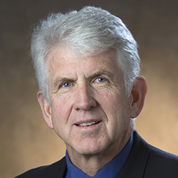

| Paul Baran | Vannevar Bush | Vinton Cerf | Douglas Engelbart |
| Robert E. Kahn | J.C.R. Licklider | Robert Metcalfe | Lawrence Roberts |
Robert Melancton Metcalfe (born April 7, 1946)
He is an engineer and entrepreneur from the United States who helped pioneer the Internet starting in 1970. He co-invented Ethernet, co-founded 3Com and formulated Metcalfe's law, which describes the effect of a telecommunications network. Since January 2011, he has been Professor of Innovation and Entrepreneurship at The University of Texas at Austin. He is also the Murchison Fellow of Free Enterprise.
Robert Metcalfe was born in 1946 in Brooklyn, New York. His father was a test technician who specialized in gyroscopes. His mother was a homemaker, but later became the secretary at Bay Shore High School. In 1964, Metcalfe graduated from Bay Shore High School to join the MIT Class of 1968. He finally graduated from MIT in 1969.
Source:Wikipedia